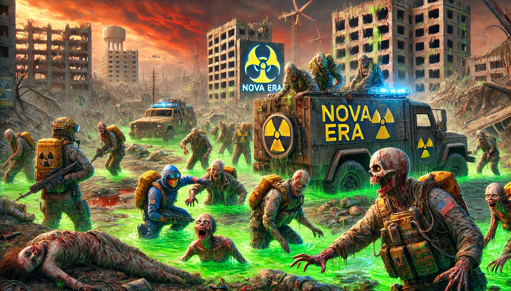

O fim da civilização como a conhecemos veio rápido e sem misericórdia. Uma praga brutal devastou a Terra, transformando os vivos em mortos-vivos, enquanto a radiação permeia o ar, tornando o ambiente ainda mais letal. Apenas os mais preparados e sortudos sobreviveram. E no céu, a Lua de Sangue surge como um presságio sombrio, banhando o mundo em um brilho vermelho ameaçador.
Agora, aqueles que restam vagam por cidades destruídas e desertos radioativos. Vestidos com trajes de proteção, eles enfrentam o duplo terror da radiação e das hordas de zumbis. O ar é pesado com a ameaça invisível da contaminação, e a Ember tornou-se a única moeda valiosa, utilizada não só para comprar mantimentos, mas também esperança.
Em meio ao caos, sobreviventes encontram abrigo temporário em acampamentos improvisados, mas nada é permanente. A radiação não conhece limites, forçando-os a constantemente se mover, enquanto hordas famintas os seguem de perto. A Lua de Sangue brilha no céu noturno, como se estivesse observando, alimentando o medo e a paranoia.
Aqueles que carregam uma Ember acreditam em um amanhã, mas o custo da sobrevivência é alto. A radiação lentamente adoece os fracos, e os zumbis caçam sem parar. Porém, no fundo, há uma faísca de esperança. Será possível reconstruir um novo mundo ou a Nova Era será marcada apenas pelo seu fim?
Enquanto a Lua de Sangue continua a vigiar, o tempo dos sobreviventes se esgota. Apenas os mais fortes, corajosos e determinados terão uma chance de ver o próximo amanhecer.